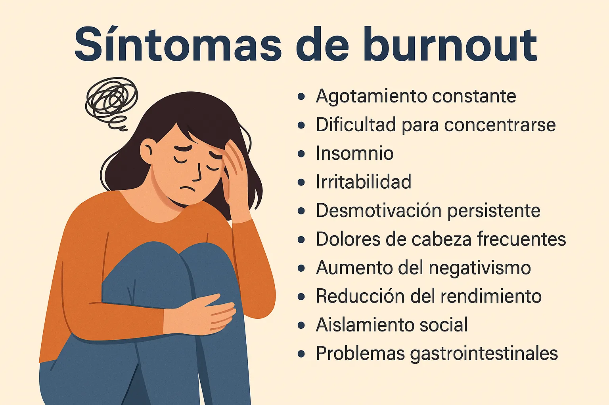

Cómo identificar los síntomas de burnout: señales de alerta y consejos prácticos
Introducción: ¿Qué es el burnout y por qué debes detectarlo a tiempo?
El burnout es un estado de agotamiento físico, mental y emocional que puede arruinar tu bienestar y productividad. Aprender a reconocer los síntomas de burnout es clave para detenerlo antes de que se convierta en algo más serio.
Principales causas del burnout en la vida diaria
¿Qué lo provoca?
- Exceso de trabajo y falta de pausas.
- No desconectar del móvil ni del correo.
- Falta de ocio o hobbies.
- Autoexigencia extrema y perfeccionismo.
10 síntomas de burnout que no debes ignorar
1️⃣ Fatiga extrema constante
Te levantas cansado cada mañana aunque duermas horas suficientes.
2️⃣ Falta de motivación y energía
Te cuesta empezar tareas simples y todo parece una montaña.
3️⃣ Problemas de sueño
Te cuesta dormir o te despiertas varias veces en la noche.
4️⃣ Irritabilidad y cambios de humor
Reaccionas de forma exagerada ante cosas pequeñas.
5️⃣ Dificultad para concentrarse
Te distraes fácilmente, olvidas cosas o te cuesta tomar decisiones simples.
6️⃣ Dolores físicos recurrentes
Dolor de cabeza, tensión en cuello o espalda, malestar general.
7️⃣ Sensación de fracaso
Aunque cumplas objetivos, no sientes satisfacción ni logro.
8️⃣ Aislamiento social
Te alejas de amigos, ignoras mensajes o prefieres estar solo.
9️⃣ Mayor consumo de cafeína, alcohol u otras sustancias
Necesitas café para mantenerte despierto o alcohol para “relajarte”.
🔟 Crisis de ansiedad o vacío emocional
Sientes una angustia constante o una sensación de vacío que no sabes explicar.
¿Qué hacer si detectas síntomas de burnout?
✅ Habla con alguien de confianza.
✅ Busca apoyo profesional si es necesario.
✅ Integra micro-hábitos que te ayuden a desconectar.
✅ Practica respiración consciente con la Guía de Respiración o escribe en tu Mindfulness Diario.
Errores comunes al ignorar los síntomas de burnout
- Minimizarlo pensando que es “normal”.
- Seguir trabajando más horas.
- No pedir ayuda por miedo o culpa.
Cómo prevenir el burnout combinando micro-hábitos y pausas conscientes
✅ Crea un rincón de paz en casa.
✅ Integra pausas de respiración y micro-hábitos (5 micro-hábitos).
✅ Desconéctate del móvil al menos 30 minutos antes de dormir.
Preguntas frecuentes sobre burnout y estrés extremo
¿Se cura solo? No. Requiere cambios reales y a veces apoyo profesional.
¿Cuánto tiempo tarda en mejorar? Depende, pero con pausas y autocuidado se nota mejoría.
¿Qué pasa si lo ignoro? Puede derivar en crisis de ansiedad o depresión.
Conclusión: Detecta los síntomas de burnout a tiempo
No ignores las señales. Evalúate, descansa y usa recursos como la Guía de Respiración y el Mindfulness Diario.